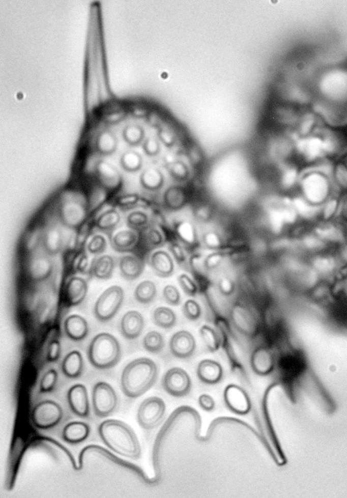

Later, Dave, Paula and her got the idea to compare the species richness and the species content of her work with the Southern Ocean dataset that I counted during my thesis, eons ago, and figure out if the extinction event I saw was global, regional or in fact just a migration out of the Antarctic circle, i. e. range shrinking due to the global cooling of the late Miocene (find out more about it by reading the press release... or naturally the paper itself). I didn't have that much time to spent contributing to the writing itself but as the concept was to directly compare the species ranges in both our datasets, I was naturally involved, in particular to match her species concepts with mine. It was quite the nice surprise to see some of the species I described in the Southern Ocean based on a few specimens popping up in the equatorial Pacific!
|  |
Lithomelissa? kozoi and Clathrocorys sugyiamai (both described in Renaudie & Lazarus 2013) were among the species also found in the Equatorial Pacific.
Despite the fact that radiolarians from these two regions are basically studied since close to 200 years, it might surprise some to know that Sarah's dataset and mine are, to date, the only two datasets that tried to actually record exhaustively the full diversity of those faunas! In part because radiolarian are so insanely diverse, but also simply because studying biodiversity was/is not a (fundable) goal of micropaleontology.
Later during reviews, I also contributed a little piece of statistical analysis that I am actually quite proud of – despite it being a very, very small part of the whole paper naturally :) It uses a nice trick I learned on CrossValidated (sadly I can't seem to find the post itself back) to test the significance of an event in a time serie: building an AR model for the time serie, and adding as explaining variable to the model a categorical variable stating whether the data points belong to the interval before or after the event, and then test if that variable explains a significant proportion of the variance (using a Wald test). It's fairly simple but it nicely goes around the limitation a t-test would have (as the data in a timeseries would most likely not be independent).
Sarah also wrote a "Behind The Paper" story that you will find on the Nature Ecology & Evolution Community blog.
Reference:
Trubovitz S., Lazarus D., Renaudie J., Noble P.J., 2020. Marine plankton show threshold extinction response to Neogene climate change. Nature Communications, 11:5069.